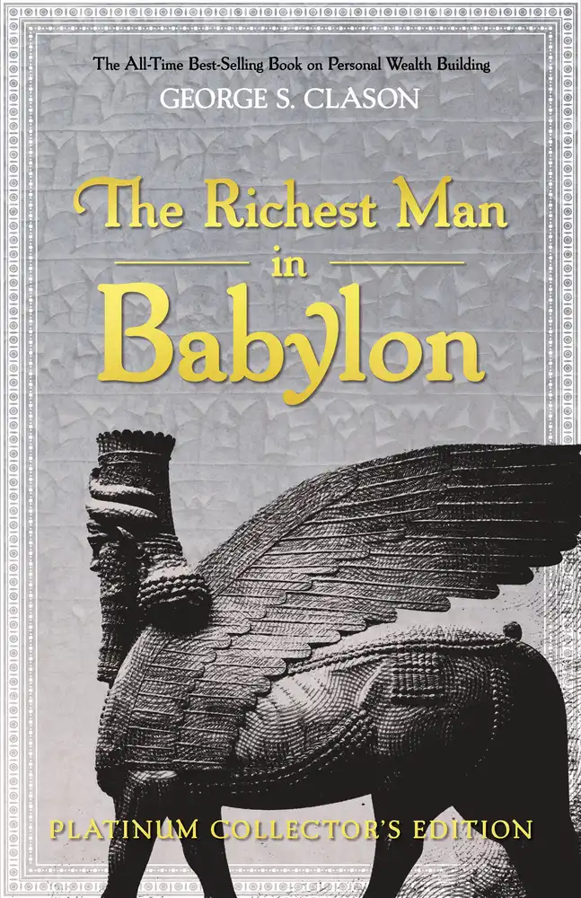

Why Did Boris Becker Fail?
From Wimbledon to Prison
📜 What Happened
The youngest-ever Wimbledon champion earned over $25M in prize money and far more in endorsements. Bad investments, luxury properties, expensive divorces, and Nigerian oil ventures drained it all. Declared bankrupt in 2017, he then hid assets from his creditors — trophies included — and in 2022 a British court sentenced him to prison for it.
☠️ The Fatal Mistake
Serial trust in glamorous 'opportunities' he never understood, then hiding assets instead of facing the collapse honestly.
🧠 The Lesson (Free for You)
Never invest in what you can't explain. And when you're in a hole, honesty is the only shovel that digs upward — concealment converts bankruptcy into prison.
📕 The Antidote Book

Told through parables set in ancient Babylon — the wealthiest city of the ancient world — Clason's 1926 classic distills personal finance into laws so simple they survive every era: save a tenth of all you earn, make…
📖 OPEN THE FULL INTERACTIVE BREAKDOWN →Searchable, filterable, free forever — they paid billions; your lesson is free.